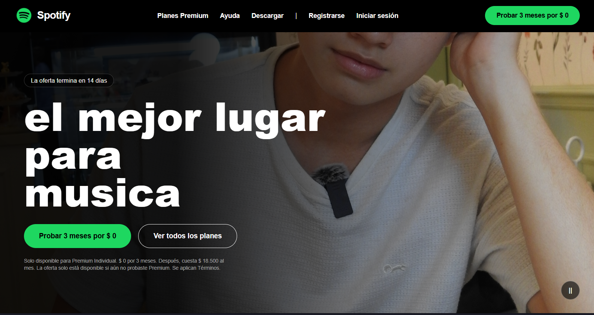
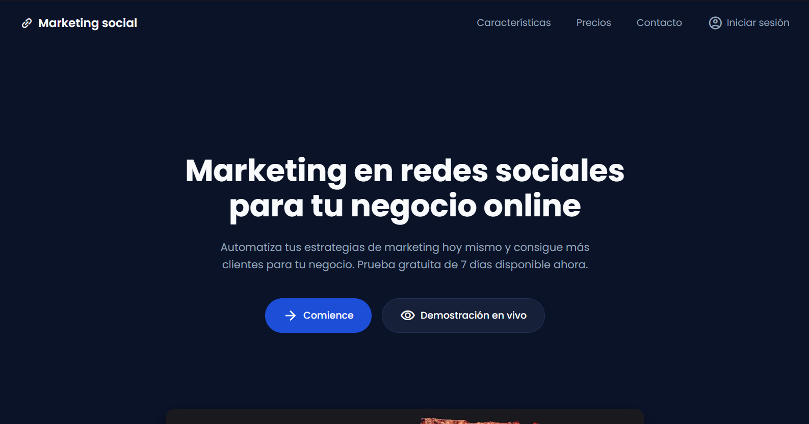

Pagina De Spotify
La página de Spotify es una portada inspirada en la plataforma de música, diseñada para presentar su contenido de forma moderna y atractiva. Utiliza HTML y CSS para crear una interfaz visual, organizada y adaptable.
Especializado en maquetación web moderna, interfaces accesibles y lógica de programación. Apasionado por construir soluciones digitales limpias y eficientes.
Aprendiz de la tecnología en Análisis y Desarrollo de Software (ADSO - SENA). Cuento con bases sólidas en en análisis de requerimientos, bases de datos y desarrollo web a nivel básico. Cuento con formación técnica en Operaciones Comerciales y Financieras y conocimientos complementarios en Inteligencia Artificial y modelado 3D con Blender. Me caracterizo por mi capacidad de análisis, aprendizaje y disposición para adquirir nuevos conocimientos y desarrollar soluciones tecnológicas.
Este portafolio presenta mi perfil como estudiante de Análisis y Desarrollo de Software, mostrando algunos de los proyectos que he realizado durante mi formación. Su objetivo es dar a conocer mis habilidades, conocimientos y trabajos en el área de desarrollo web y tecnología.
Capacidad para analizar problemáticas, requerimientos y necesidades de proyectos.
Conocimientos básicos en gestión, estructura y manejo de bases de datos.
Conocimientos básicos en HTML, CSS y desarrollo de páginas web.
Conocimientos básicos en modelado y creación de elementos 3D.
Conocimientos adquiridos mediante formación complementaria en Inteligencia Artificial.
Formación técnica en procesos contables, comerciales y financieros.

La página de Spotify es una portada inspirada en la plataforma de música, diseñada para presentar su contenido de forma moderna y atractiva. Utiliza HTML y CSS para crear una interfaz visual, organizada y adaptable.

La página de marketing es una portada diseñada para promocionar un producto o servicio de manera visual y llamativa. Utiliza una estructura sencilla con información destacada para captar la atención del usuario.
Estoy disponible para vincularme a proyectos de desarrollo o etapa práctica SENA.